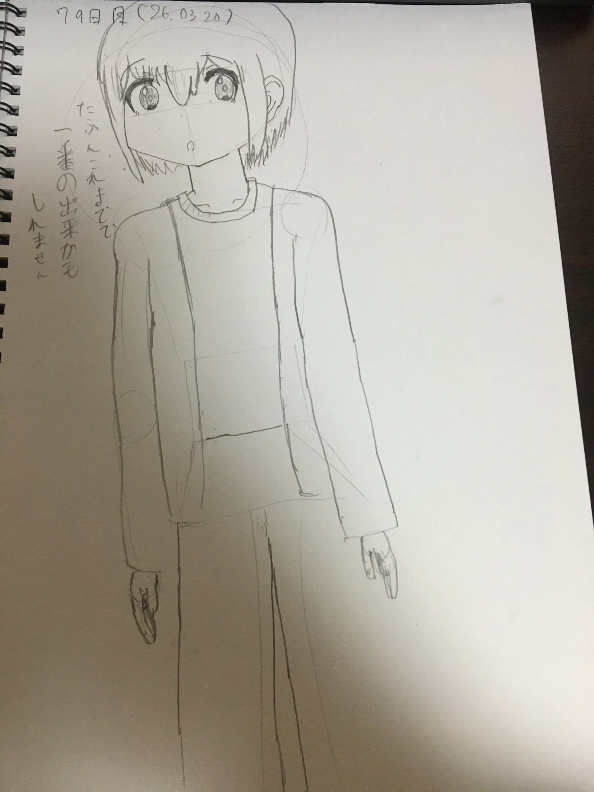

Xの話（※愚痴です）
今日の内容はほとんど愚痴ですが、X（旧Twitter）について話そうと思います。
今日は3週間ぶりにNitter経由でXやTogetterを見ましたが、相変わらずの魔境でした…
なぜ私はXをやめたか Link to heading
私自身、Xは今年の2月ごろに全て削除しました。この時点で鍵垢といくらかの画像botだけの運用でしたし、多くの情報取集は普通に検索を使用していましたしね（それでも量産型AIサイトやnoteなど信用できない情報源ばっかりだけれど）
肝心のX自体、Twitter自体の2020年時点で民度はかなり低い方でしたし、普通に政治や男女論争とか晒しとか普通にあったのですが、当時はまだMastodonはあまり知らず、Misskeyも存在自体知らなかったので、Xをやっていたわけで…
こういう系、よく「Aを持ち上げるためにBを下げる」ことが多いのですが、私のXに対する感情はその「A」すら不要な状態です。
そもそもXと同じぐらい民度の低いSNSなんて思いつくぐらいあるし…主に欧米発祥系で。4chanとか8kunとかはマジの魔境ですから。。。
関連サービスも… Link to heading
Togetterなど、Xと関連する（といっても子会社とかではない）コメント欄も民度が最悪。
まあほとんどのコメント欄でいる人が同じ人だし…
まともな界隈はあるのか？ Link to heading
Xでよく使われる用語に「界隈」というのがありますね？民度の比較によく「界隈」が使われますが、私としてはXにまともな界隈はないと考えています。
なぜなら毎日ほぼ炎上している上に、「アルゴリズム」という仕組みが無理矢理にでも見せてきますから…
アルゴリズムとかいうやつ Link to heading
本当に「アルゴリズム」という仕組みは危険だと考えています。これはユーザーの趣味・趣向・個人情報などのもとでユーザーをスクロールの無限ループに陥らせるやつで、かなりタチが悪い。
広告などでも採用されていますし、ビッグテックはそれらの情報を他社に売って儲かっています。これ以上話すと話が逸れるので詳細はこっちで。
そういや「スーパーアプリ」構想はどうなったのよ Link to heading
そういやイーロン・マスクがXを「スーパーアプリ」化する構想ありましたね？あれどうなったん？
個人的に、分かる範囲ではxAI（Grok）ぐらいですが、どうやら投資や送金などの機能があるらしいです。
個人的に別のアプリでいいんじゃね…と考えています。
というかそれ以前に「スマートフォン」という端末が必要な世の中自体とっとと終わって欲しい気持ちがあります…今やスマートフォンがないと何もできないとも言われる時代ですから。
このままだとビッグテックだけが得をする世界になると思います。AIブームも結局はビッグテック（NVIDIA、OpenAI、Oracle含む）ばかり儲かってるし。
やはりビッグテックはクソです！！！
おわりに Link to heading
私はずっと「Xはやめるべき」と言っていますが、多くのユーザーは手遅れなレベルでXを使い続けていますし、今や「もう一生やってていいよ」というレベルになっています。
プライバシーを主張するサービスやアプリケーション（例:Tuta、Proton、GrapheneOSなど）ですらXやRedditをやっている状態ですから
2月にアカウントを消した頃にはもうXから離れない人間はもう完全に見捨てました。一生Xに縛られるがいい。
以上、愚痴でしたがここまで。
お絵描きのコーナー Link to heading
78日目。うちのこだけ
